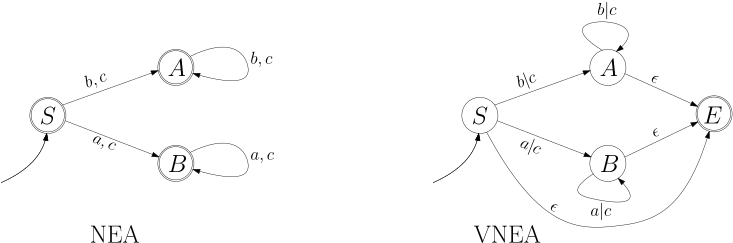
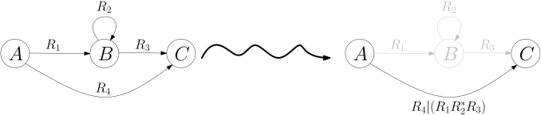
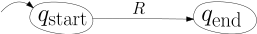

<div id="rightSideWrapper">

        <div class="content">
            <div class='chapter'>
                <div class='subChapter'>
                    <h1 class='hidden-title'>
                        <span class='subChapterTitle'>4.5 Reguläre Ausdrücke</span>
                    </h1>

                    <p>
                        Wir werden nun eine weitere Weise finden, reguläre Sprachen zu beschreiben: neben regulären
                        Grammatik (ob normal, erweitert, eingeschränkt),
                        endlichen Automaten und nichtdeterministischen endlichen Automaten
                        gibt es noch die <em>regulären Ausdrücke</em>. Dies wird wahrscheinlich von allen
                        Beschreibungsweise die sein, mit der Sie in der Praxis
                        am ehesten in Berührung kommen.
                        Wir haben bereits in <a href="./04-01-regular-grammars.html#baukasten">Kapitel 4.1</a> das
                        Baukastenprinzip kennengelernt:
                    </p>
                    <ol>
                        <li>Wenn \(L_1\) und \(L_2\) reguläre Sprachen sind, dann ist \(L_1 \cup L_2\) auch regulär;
                        </li>
                        <li>dann ist auch die Konkatenation
                            \begin{align*}
                            L_1 \circ L_2 := \{\alpha \beta \ | \alpha \in L_1, \beta \in L_2\}
                            \end{align*}
                            regulär;
                        </li>
                        <li>wenn \(L\) regulär ist, dann ist auch ihre Kleenesche Hülle
                            \begin{align*}
                            L^* := \{ \alpha_1 \dots \alpha_n \ | \ n \geq 0, \alpha_1,\dots,\alpha_n \in L\}
                            \end{align*}
                            regulär.
                        </li>
                    </ol>
                    <p>
                        Darüberhinaus haben wir Techniken kennengelernt, um aus den gegebenen regulären Grammatiken
                        eine neue Grammatik für \(L_1 \cup L_2\), \(L_1 \circ L_2\) und \(L\) konstruieren zu können.
                        Sie sollten sich jetzt folgende Frage stellen:
                    </p>
                    <div style='text-align:center'>
                        <strong>Frage:</strong>
                        Können <em>alle</em> regulären Sprachen nach diesem Baukastenprinzip erstellt werden?
                    </div>
                    <p>
                        Damit diese Frage überhaupt die Chance hat, mit <em>ja</em> beantwortet zu werden, müssen wir
                        "Atome" zur Verfügung stellen, mit denen wir beginnen können. Daher:
                    </p>
                    <ul>
                        <li>
                            Die Sprachen \(\emptyset\), \(\{\epsilon\}\) und \(\{x\}\) für jedes \(x \in \Sigma\)
                            sind regulär.
                        </li>
                    </ul>

                    Aus diesen \(|\Sigma|+2\) "Grundbausteinen" und den drei Kombinatoren \(\cup\), \(\circ\) und \(^*\)
                    können
                    Sie jede reguläre Sprache zusammenbauen. Dieses Baukastenprinzip hat auch einen Namen: reguläre
                    Ausdrücke.
                    Definieren wir diese nun formal.

                    <div class='well container theorem'>
                        <span class='numbered-title'>Definition</span>
                        Sei \(\Sigma\) einendliches Alphabet. Die regulären Audrücke über \(\Sigma\) sind induktiv
                        definiert wie folgt und beschreiben folgende Sprachen:
                        <ul>
                            <li><strong>Atome.</strong> \(\emptyset\) ist ein regulärer Ausdruck und beschreibt die
                                Sprache \(\emptyset\).
                                \(\epsilon\) ist ein regulärer Ausdruck und beschreibt die Sprache \(\{\epsilon\}\).
                                Jedes einzelne Zeichen \(x \in \Sigma\) ist ein regulärer Ausdruck und
                                beschreibt die Sprache \(\{x\}\).
                            </li>
                            <li><strong>Alternative.</strong> Wenn \(R_1, R_2\) reguläre Ausdrücke über \(\Sigma\) sind
                                und die Sprachen \(L_1\) und \(L_2\) beschreiben, so ist
                                \((R_1 | R_2)\) ein regulärer Ausdruck und beschreibt die Sprache
                                \(L_1 \cup L_2\) (die regulär ist, wie wir in <a
                                    href="./04-01-regular-grammars.html#baukasten">Kapitel 4.1</a> gesehen haben).
                            </li>
                            <li>
                                <strong>Konkatenation.</strong> \((R_1R_2)\) ist ein regulärer Ausdruck, der
                                die Sprache \(L_1 \circ L_2\) beschreibt (die auch wiederum regulär ist).
                                Der Deutlichkeit halber schreiben wir auch manchmal \(R_1 \circ R_2\).
                            </li>
                            <li>
                                <strong>Kleenesche Hülle.</strong> Wenn \(R\) ein regulärer Ausdruck ist und die Sprache
                                \(L\) beschreibt,
                                dann ist \((R^*)\) ein regulärer Ausdruck und beschreibt die Sprache \(L^*\).
                            </li>
                        </ul>
                        <p>
                            Weil in der Praxis neben \(L^*\), also beliebig langen, möglicherweise leeren Folgen von
                            \(L\)-Wörtern wir
                            oft <em>nichtleere</em> Folgen wollen,
                            führen wir die Abkürzung \(R^+\) für \(R (R^*)\) ein und bezeichnen die beschriebene Sprache
                            \(L \circ L^*\) kurzerhand als \(L^+\).
                        </p>
                    </div class='well container theorem'>

                    <p>
                        In konkreten fällen lassen gerne die Klammerung weg, wenn keine Verwechslungsgefahr besteht.
                        Auch
                        gehen wir davon aus, dass die Operatoren die Präzedenz \(^*\) vor \(\circ\) vor \(|\) haben (wie
                        <em>hoch</em> vor <em>Punkt</em> vor <em>Strich</em> in der Arithmetik), sodass beispielsweise
                        der Ausdruck \( a^*b|c^*\) die Bedeutung von \((((a^*)b)(c^*))\) hat, genauso wie wir
                        in der Arithmetik \(a^2 b + c^3\) statt \( (((a^2)b) + c^3) \) schreiben.
                    </p>
                    <p>
                        Die von den atomaren Ausdrücken beschriebenen Sprachen sind alle regulär, da sie alle
                        <em>endliche Sprachen</em> sind.
                        Dank unserer Vorarbeit aus <a href="./04-01-regular-grammars.html#baukasten">Kapitel 4.1</a>
                        wissen wir,
                        dass Alterantive, Konkatenation und Kleenesche Hülle wiederum reguläre Sprachen erzeugen.
                        Wir erhalten das folgende Ergebnis:
                    </p>
                    <div class='well container theorem' id="regex-to-grammar">
                        <span class='numbered-title'>Lemma</span>
                        Die von einem regulären Ausdruck \(R\) beschriebene Sprache \(L(R)\) ist regulär.
                    </div class='well container theorem'>

                    <p>
                        Es ist Zeit für ein paar Beispiele.
                    </p>

                    <div class='well container theorem'>
                        <span class='numbered-title'>Beispiel</span>
                        Nehmen wir die Sprache der Wörter der Form <code>bla:bla:blu.xyz-12-ab.b:x</code> aus dem
                        letzten Kapitel. Sie erinnern sich:
                        eine endliche Folge von <em>Labels</em>, wo ein Label eine nichtleere Folge von Blöcken ist, die
                        entweder <code>:</code> oder durch <code>-</code> separiert sind, wobei innerhalb eines Labels
                        immer nur ein
                        Separatortyp vorkommen darf, und wobei ein Block eine nichtleere Folge von alphanumerischen
                        Zeichen ist (wir haben uns dann auf den Buchstaben \(a\) beschränkt).
                        Sehen Sie, dass bereits unsere natürlichsprachliche Beschreibung von \(L\) von dem
                        Baukastenprinzip gebraucht macht.
                        Wenn wir nun einen regulären Ausdruck für \(L\) erstellen wollen, so können wir bequem Stück für
                        Stück vorgehen.

                        <p>
                            Ein Block ist eine nichtleere Folge von \(a\)'s. Der entsprechende reguläre Ausdruck \(B\)
                            für Blöcke ist also
                            \begin{align*}
                            B : = a^+
                            \end{align*}
                            Für ein Label müssen wir uns entscheiden, ob wir die Blöcke mit <code>:</code> oder
                            <code>-</code> separieren; wir
                            erhalten den regulären Ausdruck \(T\) für Labels ist also
                            \begin{align*}
                            T := B ({:}B)^* | B (\text{-}B)^*
                            \end{align*}
                            Sehen Sie, dass wir in \(T\) das erste \(B\) "ausfaktorisieren" können und statt dem obigen
                            folgenden Ausdruck schreiben können:
                            \begin{align*}
                            T' := B ( ({:}B)^* | (\text{-}B)^* )
                            \end{align*}
                            Beide Varianten sind äquivalent, d.h., sie beschreiben die gleiche Sprache; die erste
                            Variante, also \(T\), ähnelt mehr dem,
                            was wir in unserer Grammatik bzw. dem nichtdeterministischen Automaten für \(L\) getan
                            haben, während \(T'\) eher
                            die Arbeitsweise des determinisitschen Automaten reflektiert (wir lesen erst einmal einen
                            Block und erst, wenn wir zum ersten mal auf
                            <code>:</code> oder <code>-</code> stoßen, entscheiden wir uns für den "Typ" des Labels).
                            Schlussendlich ist ein Wort in der Sprache eine mit <code>.</code> separierte Folge von
                            Labels, also:
                            \begin{align*}
                            R := T ({.}T)^*
                            \end{align*}
                            Somit können wir nun den regulären Ausdruck für \(L\) in seiner ganzen Pracht zeigen:

                            \begin{align*}
                            R := (a^+ ({:}a^+)^* | a^+ (\text{-}a^+)^*) ({.}(a^+ ({:}a^+)^* | a^+ (\text{-}a^+)^*))^*
                            \end{align*}
                        </p>

                    </div class='well container theorem'>


                    <div class='well well-lg numbered-exercise container'>
                        <span class='numbered-title'>Übungsaufgabe</span>
                        Laden Sie sich <a href="../code/regular-expressions/TestRegex.java">TestRegex.java</a> herunter,
                        kompilieren und starten Sie es.
                        <pre>
<code class='terminalPrompt'>java TestRegex</code>                            
<code class='terminalOutput'>Please enter a regular expression:</code> (a+)(:a+)*
<code class='terminalOutput'>Enter words to be matched, one per line</code> 
<code>aaaaa:aa:aaaa:a</code>
<code class='terminalOutput'>true</code>
<code>aaa:aa:</code>
<code class='terminalOutput'>false</code></pre>
                        <p>
                            Schreiben Sie nun einen regulären Ausdruck \(R\) für die obige Sprache und testen Sie ihn
                            mit dem Java-Programm.
                        </p>
                    </div>

                    <div class='well well-lg numbered-exercise container'>
                        <span class='numbered-title'>Übungsaufgabe</span>
                        In der Praxis gibt es bei reguläre Ausdrücken viele Abkürzung, so beschreibt
                        <code>[a-z]</code> beispielsweise die Menge aller Kleinbuchstaben,
                        <code>[aoeiuy]</code> beschreibt die Menge \{a,o,e,i,u,y\} etc.
                        Der reguläre Ausdruck <code>[a-z]*[aeiuoy][a-z]*</code> beschreibt also die
                        Menge aller Wörter, die mindesten einen Vokal enthalten.
                        Lesen Sie hierfür unter Anderem
                        <div style='text-align:center'>
                            <a href="https://www.w3schools.com/java/java_regex.asp">W3Schools</a>
                        </div>
                        und
                        <div style='text-align:center'>
                            <a href="https://docs.oracle.com/javase/8/docs/api/java/util/regex/Pattern.html">Patternl.html
                                auf der Java-API</a>,
                        </div>
                        lassen sich aber bitte nicht von der Menge an Details erschlagen.

                        <p>
                            Schreiben Sie nun in der Java-Regex-Syntax einen regulären Ausdruck für unsere obige Sprache
                            \(L\), wo Sie aber
                            neben \(a\) alle alphanumerischen Zeichen zulassen.
                        </p>
                    </div>


                    <h2>Einen regulären Ausdruck für jede reguläre Sprache</h2>

                    Wir beweisen nun das Gegenstück zu <a href="#regex-to-grammar">Lemma 4.5.2</a>:
                    <div class='well container theorem'>
                        <span class='numbered-title'>Theorem</span>
                        Sei \(L\) eine reguläre Sprache. Dann gibt es einen regulären Ausdruck \(R\), der \(L\)
                        beschreibt,
                        also
                        \(L(R) = R\).
                    </div class='well container theorem'>
                    <p>
                        Wir paraphrasieren hier den Beweis aus Michael Sipsers <em>Introduction to the Theory of
                            Computation</em>.
                    </p>
                    <div class='well container'>
                        <strong>Beweis.</strong>
                        Zunächst skizzieren wir die Beweisidee. Da \(L\) regulär ist, gibt es einen
                        nichtdeterministischen endlichen
                        Automaten \(M\), die \(L\) akzeptiert. Wir werden nun \(M\) Schritt für Schritt in einen
                        regulären Ausdruck
                        verwandeln. Kern der Idee ist, dass wir neben den üblichen Übergängen
                        \begin{align*}
                        q_1 \step{x} q_2
                        \end{align*}
                        komplexere Übergänge wie zum Beispiel
                        \(q_1 \step{xy} q_2\) zulassen. Die Bedeutung wäre hier beispielsweise, dass der Automat
                        von \(q_1\) nach \(q_2\) übergehen kann, wenn er die Eingabesymbole \(xy\) liest. Wir lassen
                        auch komplexere
                        Übergänge wie
                        \begin{align*}
                        q_1 \step{x|yz^*} q_2
                        \end{align*}
                        zu, also "von \(q_1\) kann der Automat nach \(q_2\) gehen, wenn er ein \(x\) liest oder
                        ein \(y\), gefolgt von beliebig vielen \(z\)"; ganz allgemein lassen wir Übergänge der Form
                        \begin{align*}
                        q_1 \step{R} q_2 \ ,
                        \end{align*}
                        wobei \(R\) ein regulärer Ausdruck ist. Insbesondere lassen wir Übergänge der Form
                        \(q_1 \step{\epsilon} q_2 \) zu.
                        Dies bedeutet, dass der Automat von \(q_1\) nach \(q_2\) "springen" kann, ohne ein Eingabesymbol
                        zu lesen.
                        Des weiteren verlangen wir, dass es genau einen akzeptierenden Endzustand \(q_{\rm end}\) mit
                        \(\qstart \ne q_{\rm end}\),
                        und dass es keine Kanten gibt, die in \(\qstart\) hineingehen, und keine, die aus \(q_{\rm
                        end}\)
                        hinausgehen.
                        All dies lässt sich leicht verwirklichen, wenn wir reguläre Ausdrücke als
                        Kantenbeschriftung zulassen. Wir nennen so einen Automaten einen <em>verallgemeinerten
                            nichtdeterministischen endlichen Automaten (VNEA)</em>.
                        <figure>
                            
                        </figure>

                        <p>Definieren wir nun formal, was VNEAs sind und welche Sprache sie akzeptieren:</p>
                        <div class='well subtheorem theorem'>
                            <span class='numbered-title'>Definition</span>
                            <strong>(Verallgemeinerter nichtdeterministischer endlicher Automat, VNEA).</strong>
                            Ein VNEA besteht aus einem Alphabet \(\Sigma\), einer Zustandsmenge \(Q\), einen
                            Startzustand \(\qstart \in Q\), einem
                            akzeptierenden Zustand \(q_{\rm end} \in Q \setminus \{\qstart\}\), einer
                            Menge von gerichteten Kanten
                            \begin{align*}
                            E \subseteq (Q \setminus \{\qstart\}) \times (Q \setminus \{q_{\rm end}\}) \ .
                            \end{align*}
                            Jede Kante \((q_i, q_j) \in E\) ist mit einem regulären Ausdruck
                            \(\delta(q_i, q_j)\) beschriftet. Wenn \(R = \delta(q_i, q_j)\) gilt, dann schreiben wir
                            \(q_i \step{R} q_j\).
                            Wenn \(\beta \in L(R)\) gilt, \(\beta\) also ein Wort in der von \(R\) beschriebenen Sprache
                            ist, dann schreiben wir auch
                            \(q_i \step{\beta \in R} q_j \).
                            <p>
                                Für \(q, q' \in Q\) und \(\alpha \in \Sigma^*\) schreiben wir
                                \begin{align*}
                                q \Step{\alpha} q'
                                \end{align*}
                                wenn man \(\alpha\) zerlegen kann als \(\alpha = \beta_1 \beta_2 \dots \beta_k\) gibt
                                (wobei \(\beta_i = \epsilon\) zulässig ist)
                                und es eine Zustandsfolge
                                \(q = q_0, q_1, \dots, q_k = q'\) gibt, wobei \( (q_{i-1}, q_i)\in E\) ist und mit einem
                                regulären Ausdruck
                                \(R_i\) beschriftet ist und
                                jedes \(\beta_i\) in der von \(R_i\) beschriebenen Sprache ist. Wenn also
                                \begin{align*}
                                q_0 \step{\beta_1 \in R_1} q_1 \step{\beta_2 \in R_2} q_2 \dots q_{k-1} \step{\beta_k
                                \in R_k} p_k
                                \end{align*}
                                gilt.
                            </p>
                        </div class='well container theorem'>
                        <p>
                            Einen gegebenen NEA können wir leicht in einen VNEA transformieren, indem wir, soweit nötig,
                            (1) einen neuen Startzustand kreieren (damit dieser keine eingehenden Kanten hat),
                            (2) einen neuen Endzustand kreieren,
                            (3) "parallele" Übergänge wie \( (q_i, x, q_j), (q_i, y, q_j)\) zu einer Kante
                            zusammenfassen,
                            der dann mit dem regulären Ausdruck \(x | y\) beschriftet ist.
                        </p>
                        <p>
                            Wir haben den ganzen Aufwand betrieben, weil wir für einen VNEA sehr leicht
                            Zustände eliminieren können. Wenn wir zum Beispiel
                            \begin{align*}
                            q_0 \step{R_1} q_1 \step{R_2} q_2
                            \end{align*}
                            haben, dann können wir ja ein Wort in \(R_1 R_2\) lesen und direkt von \(q_0\) nach \(q_2\)
                            übergehen;
                            wir brauchen also \(q_1\) gar nicht. Wir müssen nur aufpassen, das neue \(R_1 R_2\) mit
                            einem eventuell bereits bestehenden Übergang von \(q_0\) nach \(q_2\) zu kombinieren. Im
                            allgemeinen:
                        </p>

                        <figure>
                            
                        </figure>
                        <p>
                            Falls die mit \(R_2\) beschriftete Selbstschleife an Zustand \(B\) nicht existieren sollte,
                            dann
                            schreiben wir einfach \(R_1R_3\) anstatt \(R_1 R_2^* R_3\); falls der Übergang \(A
                            \step{R_4} B\) nicht
                            existieren sollte , lassen wir das \(R_4 | \) im rechten Bild einfach weg.
                            (Sipser führt hier den eleganten Formalismus ein, zu verlangen, dass <em>jedes</em> Paar
                            durch
                            eine Kante verbunden ist und würde fehlende Kanten einfach mit dem regulären Ausdruck
                            \(\emptyset\) beschriften.)
                        </p>
                        <p>
                            Wir suchen uns also einen Zustand \(B \in Q \setminus \{\qstart, \qend\}\), den wir
                            eliminieren wollen, und führen die oben beschriebene
                            \(B\)-Umfahrung parallel für alle Paare \(A,C\) aus, für die es \(A \step{} B \step{} C\)
                            gibt.
                            Wir erhalten einen VNEA mit einem Zustand weniger, der zu dem vorherigen VNEA äquivalent
                            ist, also
                            die gleiche Sprache akzeptiert. Wiederholen wir diesen Schritt, so erhalten
                            wir am Ende einen Automat mit nur zwei Zuständen, nämlich
                        </p>
                        <figure>
                            
                        </figure>
                        <p>
                            Dieser VNEA akzeptiert immer noch die gleiche Sprache \(L\) wie der ursprüngliche NEA, mit
                            dem wir
                            begonnen haben. Welche Sprache ist das? Es ist die Sprache aller \(\alpha \in \Sigma\) mit
                            \begin{align*}
                            \qstart \Step{\alpha} \qend
                            \end{align*}
                            Da der Pfad von \(\qstart\) nach \(\qend\) nur eine Kante hat, muss \(\alpha\) in der von
                            \(R\) beschriebenen Sprache liegen. \(R\) ist der gesuchte reguläre Ausdruck: er beschreibt
                            die Sprache \(L\).
                            <span class='qed'>\(\square\)</span>
                        </p>

                    </div class='proof'>


                    <p>Hier sehen Sie den ganzen Ablauf an unserer <code>aaaa:a:aaa.aa-aa</code>-Sprache:</p>


                    <!--
                    <figure class='centered-figure well container' id="carousel-nfsm-to-regex">
                        <a class='left carousel-control-prev-icon' href='#nea-to-regex' data-slide='prev'>
                            <div class='carousel-nav-icon'>
                                
                            </div>
                        </a>
                        <a class='right carousel-control-next-icon' href='#nea-to-regex' data-slide='next'>
                            <div class='carousel-nav-icon'>
                                
                            </div>
                        </a>
                        <div id='nea-to-regex' class='carousel' data-interval='false' style='display:inline-block'>
                            <ol class='carousel-indicators'>
                                <li data-target='#nea-to-regex' data-slide-to='1' class='active'></li>
                                <li data-target='#nea-to-regex' data-slide-to='2'></li>
                                <li data-target='#nea-to-regex' data-slide-to='3'></li>
                                <li data-target='#nea-to-regex' data-slide-to='4'></li>
                                <li data-target='#nea-to-regex' data-slide-to='5'></li>
                                <li data-target='#nea-to-regex' data-slide-to='6'></li>
                                <li data-target='#nea-to-regex' data-slide-to='7'></li>
                                <li data-target='#nea-to-regex' data-slide-to='8'></li>
                                <li data-target='#nea-to-regex' data-slide-to='9'></li>
                                <li data-target='#nea-to-regex' data-slide-to='10'></li>
                                <li data-target='#nea-to-regex' data-slide-to='11'></li>
                                <li data-target='#nea-to-regex' data-slide-to='12'></li>
                                <li data-target='#nea-to-regex' data-slide-to='13'></li>
                                <li data-target='#nea-to-regex' data-slide-to='14'></li>
                                <li data-target='#nea-to-regex' data-slide-to='15'></li>
                                <li data-target='#nea-to-regex' data-slide-to='16'></li>
                                <li data-target='#nea-to-regex' data-slide-to='17'></li>
                                <li data-target='#nea-to-regex' data-slide-to='18'></li>
                                <li data-target='#nea-to-regex' data-slide-to='19'></li>
                            </ol>
                            <div class='carousel-inner' style='display:inline-block'>
                                <div class='item active'>
                                    Wir eliminieren Zustand \(D'\)</div>
                                <div class='item'>
                                    \(D'\) eliminiert. Die Wege \(S \rightarrow D\) und \(S \rightarrow D' \rightarrow D\) 
                                verschmelzen zu \(S \rightarrow D\) mit Label \(a|a\text{-}\)</div>
                                <div class='item'>
                                    Wir eliminieren \(C'\).</div>
                                <div class='item'>
                                    \(C'\) eliminiert. </div>
                                <div class='item'>Es bleiben 5 Zustände. Als nächstes eliminieren wir \(D\).</div>
                                <div class='item'>\(D\) eliminiert. Die Selbstschleife von \(D\) erzeugt den \(^*\)-Ausdruck in 
                                        \((a|a\text{-})(a|a\text{-})^*a\) den neuen Kanten.</div>
                                <div class='item'>Wir kürzen \( RR^*\) als \(R^+\) ab.</div>
                                <div class='item'>Wir haben nun \( RR^*\) als \(R^+\) abgekürzt.</div>
                                <div class='item'>Vier Zustände. Wir eliminieren \(C\).</div>
                                <div class='item'>\(C\) eliminiert.</div>
                                <div class='item'>Drei Zustände. Führen wir parallele Kanten zusammen.</div>
                                <div class='item'>Immer noch drei Zustände. Schwierig zu lesen. </div>
                                <div class='item'>Ordnen wir es um. Ich habe vergessen, einen neuen Startzustsand einzuführen. Holen wir es nach.</div>
                                <div class='item'>So ist es besser. Allerdings vier Zustände, weil neuer Startzustand. </div>
                                <div class='item'>Vier Zustände. Wir eliminieren  \(S'\).</div>
                                <div class='item'>\(S'\) eliminiert.</div>
                                <div class='item'>Drei Zustände</div>
                                <div class='item'>Nur noch zwei Zustände.</div>
                                <div class='item'>Hier ist Ihr regulärer Ausdruck.</div>
                            </div class='carousel-inner'>
                        </div class='carousel'>
                    </figure>
                    -->

                    <div class="container" id="carousel-nfsm-to-regex">
                        <div style="overflow-x: auto; margin: 1em;">
                            <figure>
                                
                            </figure>
                        </div>
                    </div>

                    <div class='well well-lg numbered-exercise container'>
                        <span class='numbered-title'>Übungsaufgabe</span>
                        Wandeln Sie nach dem eben beschriebenen Schema den Automaten
                        <figure>
                            
                        </figure>
                        in einen regulären Ausdruck um.
                    </div>


                </div class="subchapter">

            </div class='chapter'>


        </div class="content">
    </div class="rightSideWrapper">